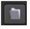

|
连接类型 |
连接名称 |
函数 |
|
输入 |
未命名 |
要编辑的三维几何对象。如果你想一起编辑几个对象，你也可以连接一个 MergeGeo 节点在这里。 |
|
控制 (UI) |
旋钮 (脚本) |
默认值 |
函数 |
|
EditGeo 标签 |
|||
|
显示 |
display |
不变 |
调整 3D 对象的显示特征。这些设置不会影响场景的渲染输出; 这些设置仅用于在 3D 查看器中显示。 • 关闭 -隐藏三维几何对象。 • 线框 -仅显示对象几何图形的轮廓。 • 固体 -用纯色显示所有几何图形。 • 固体 线框 -使用对象的几何轮廓将几何图形显示为纯色。 • 纹理 -仅显示表面纹理。 • 纹理 线框 -显示线框和表面纹理。 • 不变 -不会更改对象的显示模式。查看器可以覆盖此设置。 |
|
可选 |
可选 |
已启用 |
启用后，您可以在查看器中正常进行选择。禁用时，无法选择或更改点。 |
|
渲染 |
Render_mode |
不变 |
设置对象的渲染方式。此控件独立于 显示 选择，但具有相同的设置。 |
|
轴对齐 |
Axis_align |
对象 |
设置当前选择的轴在查看器中的对齐方式: • 对象 -Xyz 轴的位置由选择中所有顶点的平均位置决定。轴的方向与对象的方向相同。 • 平均正常 -Xyz 轴的位置由选择中所有顶点的平均位置决定。轴的方向与当前选择的法线的平均值对齐。 |
|
|
Set_key |
N/A |
单击可设置当前选定顶点在当前帧中的位置的关键帧。 |
|
|
Remove_key |
N/A |
单击以移除当前帧上当前选定顶点位置的关键帧。 |
|
重置几何图形 |
重置 |
N/A |
单击可将选定几何图形的顶点重置为其原始位置。 |
| 变换选项卡 | |||
|  |
File_menu |
N/A |
选择导入或导出通道文件: • 导入 chan 文件 -导入通道文件，并根据通道文件中的转换数据对输入对象进行转换。通道文件包含给定镜头中每个动画帧的一组笛卡尔坐标。您可以使用 Nuke 或 3D 跟踪软件 (如 3D 均衡器、 Maya 或 Boujou) 创建和导出它们。 • 导出 chan 文件 -将应用于输入对象的转换参数导出为通道文件。这是艺术家之间共享设置的有用方法。 |

|
Snap_menu |
N/A |
• 匹配选择位置 -根据选定的点，对象将捕捉到新位置。 • 匹配选择位置，方向 -根据选定的点，对象将捕捉到新的位置和方向。 • 匹配选择位置、方向、大小 -根据选定的点，将对象捕捉到新的位置、方向和大小。 |
|
变换顺序 |
Xform_order |
SRT |
设置缩放 (S) 、旋转 (R) 和平移 (T) 的操作顺序。可能的操作组合是 SRT 、 STR 、 RST 、 RTS 、 TSR 、 TRS。 |
|
旋转顺序 |
Rot_order |
ZXY |
设置旋转顺序。可能的轴向组合是 ZXY，XYZ，XZY，YXZ，YZX，ZXY，ZYX。 |
|
翻译 |
翻译 |
0,0，0 |
允许您沿 x 、 y 和 z 轴平移三维对象。也可以通过在 3D 查看器中单击并拖动轴来调整平移值。 |
|
旋转 |
旋转 |
0,0，0 |
允许您围绕 x 、 y 和 z 轴旋转 3D 对象。可以通过按住旋转来调整旋转值 Ctrl / Cmd 并在 3D 查看器中拖动。 |
|
规模 |
规模 |
1,1，1 |
用于在 x 、 y 和 z 轴上缩放三维对象。 |
|
均匀刻度 |
Uniform_scale |
1 |
允许您在 x 、 y 和 z 轴上同时缩放三维对象。 |
|
倾斜 |
倾斜 |
0,0，0 |
用于在 x 、 y 和 z 轴上倾斜对象。 |
|
枢轴 |
枢轴 |
0,0，0 |
对三维对象的位置、缩放、倾斜和旋转进行更改时，这些更改将从对象的原点或轴的位置发生。枢轴 x 、 y 和 z 控件允许您偏移枢轴点，并将其移动到您喜欢的任何位置 -- 您甚至可以将其移动到对象的外部。随后将相对于新的枢轴点位置进行转换。 你也可以按住 Ctrl / Cmd Alt 并将枢轴点拖到 3D 查看器中的新位置。 |
|
局部矩阵 |
|||
|
指定矩阵 |
UseMatrix |
残疾人 |
启用此控件可以指定要转换的对象的矩阵值，作为在上面设置变换、缩放、倾斜和枢轴值的替代方法。 |
|
矩阵 |
矩阵 |
N/A |
矩阵显示对象的变换、旋转、缩放、倾斜和枢轴控件的值。 检查 指定矩阵 然后从另一个对象中复制或拖放矩阵值以应用这些值，例如，如果要对齐场景中的对象。 |